library(mice) # for imputation
library(miceadds) # for imputation
library(ggmice) # for visualization
library(ggplot2) # for visualization
library(dplyr) # for data wrangling
library(lme4) # for multilevel modeling
library(broom) # for tidying model output
library(broom.mixed) # for tidying model outputImputation of incomplete multilevel data
Introduction
This is a tutorial on multiple imputation of incomplete multilevel data with mice in R. But before we dive into the details and feel sorry for all the holes in our data, it is important to go a few steps back. Because it is not just holes in our data. Most often, there is more data than holes. And more data means more information. In this tutorial we frame your mind to consider the flow of that information in such a way that the multilevel structure is taken into account. In other words, we will show you how to solve for the incomplete data to fit your multilevel model.
Regardless of the type of model we are estimating, we need information for our model to be fit on. Some information we can see, such as the data we have collected. Other sources of information may be unavailable, such as missing values or cases that are not part of our data set. It can easily occur that the available information is not sufficient for our model to arrive at the correct conclusion. This is a common scenario in practice and extends far beyond the domain of mere missing values in data sets (see e.g. Hand 2020). In any case, when the available information is not sufficient, our standard modeling practices fall short and we need to adjust the model to arrive at the correct conclusion.
The concept of adjusting models is by itself quite intuitive. When we need to go from data to answer on a dataset that does not tell us everything, there are but three solutions: We can either append the data with the necessary unavailable information, adjust our modeling such that the necessary unavailable information is taken into account, or do both. In either way, some model is needed to solve for the incompleteness.
Modeling incomplete data sets, however, is not a trivial task. One needs to carefully make assumptions about the nature of the available and unavailable information and explicitly define the models that connect these two information sources. This tasks becomes increasingly challenging when the complexity of the modeling effort increases. For multilevel data sets this is especially the case, because the complexity of modeling can increase exponentially with every additional level.
In this tutorial we aim to provide a practical guide to imputing incomplete multilevel data. We will use the R package mice to illustrate the imputation process and demonstrate how it connects to a larger ecosystem of imputation and combination methods for incomplete multilevel data.
Intended audience
This tutorial is aimed at researchers and analysts who know their way around multilevel analyses, but lack the skills and expertise of dealing with incomplete sources of information. For them we will gently introduce, explain and demonstrate the necessary methodology and its application in mice. For applied researchers and analysts that are both unfamiliar with multilevel modeling and incomplete data analysis, we will try to be as complete as possible, but we may refer to other sources to complement our tutorial.
Methods
The R package mice provides a framework for imputing incomplete data on a variable-by-variable basis. The mice function allows users to flexibly specify how many times and under what model the missing data should be imputed. This is reflected in the first four function arguments
mice(data, m, method, predictorMatrix, ...)where data refers to the incomplete dataset, m determines the number of imputations, method denotes the functional form of the imputation model per variable and predictorMatrix specifies the interrelational dependencies between the variables and imputation models (i.e., the set of predictors to be used for imputing each incomplete variable).
The object supplied as data should be tabular (e.g. a data.frame with \(n\) rows and \(p\) variables, with missing values coded as NA). For multilevel imputation models, a clustering variable is required. The clustering variable should be a factor or an integer vector, with each level representing a unique cluster. Moreover, the data should be in ‘long’ format, with each row representing a unique unit-level observation. The multilevel imputation functions implemented in mice will not work with ‘wide’ data, where each row represents a cluster and the columns represent the unit-level observations.
The number of imputations m should be determined based on the severity of the missing data problem and the intended analysis model of substantive interest. Van Buuren (2018, \(\S\) 2.8) suggests using the default m = 5 for imputation model building, and to increase m as required after initial exploration.
The method argument specifies the imputation method to be used for each column in data. If not supplied by the user, method defaults to convenient standard methods for single level continuous and categorical data. Since these do not take any clustering or multilevel structures into account, valid imputation of incomplete multilevel data will typically require a user-supplied methods vector. The tables 7.2, 7.3 and 7.4 in van Buuren (2018, \(\S\) 7.6, \(\S\) 7.7 and \(\S\) 7.8, respectively) provide an overview of the available methods to perform univariate multilevel imputation. Note that that in the current version of mice (v. 3.16) there are no dedicated multilevel imputation methods available for discrete variables with 3 or more unordered categories.
With the predictorMatix argument, mice users can define which columns should be used as predictors in each imputation model. The default predictor matrix is a square binary matrix with the variables to be imputed in the rows and the imputation model predictors in the columns. The default predictorMatrix will not be suitable for multilevel data. Univariate imputation methods for two-level data use other codes than 0 and 1. In the predictor matrix, -2 denotes the cluster variable, a value 1 indicates a fixed effect and a value 2 indicates a random effect. An entry of 3 or 4 indicates that the cluster means of the covariates are added as a predictor to the imputation model with fixed or random effects, respectively.
FIMD, section 7.10
Recipe for a level-1 target:
- Define the most general analytic model to be applied to imputed data;
- Select a 2l method that imputes close to the data;
- Include all level-1 variables;
- Include the disaggregated cluster means of all level-1 variables;
- Include all level-1 interactions implied by the analytic model;
- Include all level-2 predictors;
- Include all level-2 interactions implied by the analytic model;
- Include all cross-level interactions implied by the analytic model;
- Include predictors related to the missingness and the target;
- Exclude any terms involving the target
Recipe for a level-2 target:
- Define the most general analytic model to be applied to imputed data;
- Select a 2lonly method that imputes close to the data;
- Include the cluster means of all level-1 variables;
- Include the cluster means of all level-1 interactions;
- Include all level-2 predictors;
- Include all interactions of level-2 variables;
- Include predictors related to the missingness and the target;
- Exclude any terms involving the target
Case study
Prerequisites: incomplete dataset and known multilevel modeling strategy (i.e. the most general analytic model to be applied to imputed data), plus an assumed missingness mechanism. This tutorial assumes M(C)AR, for MNAR see Munoz et al.
- Load the data, make sure the variables are correctly formatted (e.g. numeric clustering variable)
- Explore the missingness
Fix any cluster-level missingness determinately (note that2l.onlymethods do not work if there are inconsistencies, fix those first!). Re-evaluate the missingness- Explore bivariate relations and associations with missingness indicators (optionally test the associations?)
- For each incomplete variable:
- Determine the imputation method
- Choose imputation model predictors (see recipe)
- Set methods vector and predictor matrix
- Impute the incomplete data
- If error…
- After successful run:
- Evaluate convergence
- Evaluate imputations
- Analyze and pool
- If error… (e.g. rescale variables by converting imputations to long format, mutate, then back to mids)
- After successful run:
- Evaluate missingness ratio’s (e.g. fraction of missing information)
- If necessary, increase \(m\) and re-impute
- For further multilevel model building, AICs could be pooled, how?
The most general analytic model to be applied to imputed data (Hox et al, 2018, p. 17, equation 2.12).
\[\begin{align} \text{popularity}_{ij} = &\gamma_{00}+ \gamma_{10} \text{gender}_{ij} + \gamma_{20} \text{extraversion}_{ij} + \\ &\gamma_{01} \text{experience}_j + \gamma_{21} \text{extraversion}_{ij} \times \text{experience}_j + \\ &u_{2j} \text{extraversion}_{ij} + u_{0j}+ e_{ij} \end{align}\]
Setup R environment
Load the data
load("data/popular_MAR.RData")
dat <- popular_MARInspect the missingness.
plot_pattern(dat, square = FALSE)
The unit identifier and cluster identifier are observed for all cases. All other variables are incomplete. The outcome variable ‘popularity’ is missing for 799 cases. The cluster-level variable ‘teacher experience’ is missing only once. The unit-level variables ‘gender’, ‘extraversion’ and ‘teacher assessment’ are missing for 3, 344 and 275 cases, respectively.
Teacher assessment is not part of the analysis model, but may serve as auxiliary variable in the imputation models. This is advisable if the observed data in the teacher assessment variable is strongly related to the observed data in the incomplete variables or their missingness indicators (see below).
plot_corr(dat, square = FALSE)
plot_flux(dat, label = FALSE)
The auxiliary variable ‘teacher assessment’ may be useful in the imputation for the incomplete outcome variable ‘popularity’. The unit identifier is not relevant, and will be left out of the imputation models.
Complete case analysis
Before we start imputing the incomplete data, we can fit a complete case model to the observed data. This will give us a baseline for comparison with the imputed data.
Single-level model
fit <- lm(
popularity_ij ~ 1,
data = dat
)
tidy(fit)# A tibble: 1 × 5
term estimate std.error statistic p.value
<chr> <dbl> <dbl> <dbl> <dbl>
1 (Intercept) 5.03 0.0396 127. 0M0: intercept-only model
fit <- lmer(
popularity_ij ~ (1 | cluster_id),
data = dat,
REML = FALSE
)
tidy(fit)# A tibble: 3 × 6
effect group term estimate std.error statistic
<chr> <chr> <chr> <dbl> <dbl> <dbl>
1 fixed <NA> (Intercept) 5.02 0.0891 56.4
2 ran_pars cluster_id sd__(Intercept) 0.831 NA NA
3 ran_pars Residual sd__Observation 1.09 NA NA M1: model with explanatory variables
fit <- lmer(
popularity_ij ~ gender_ij + extraversion_ij + experience_j + (1 | cluster_id),
data = dat,
REML = FALSE
)
tidy(fit)# A tibble: 6 × 6
effect group term estimate std.error statistic
<chr> <chr> <chr> <dbl> <dbl> <dbl>
1 fixed <NA> (Intercept) -0.455 0.199 -2.28
2 fixed <NA> gender_ij 1.29 0.0481 26.7
3 fixed <NA> extraversion_ij 0.447 0.0215 20.7
4 fixed <NA> experience_j 0.0877 0.00874 10.0
5 ran_pars cluster_id sd__(Intercept) 0.518 NA NA
6 ran_pars Residual sd__Observation 0.764 NA NA M1A: model with explanatory variables, extraversion slope random
fit <- lmer(
popularity_ij ~ gender_ij + extraversion_ij + experience_j +
(1 + extraversion_ij | cluster_id),
data = dat,
REML = FALSE
)
tidy(fit)# A tibble: 8 × 6
effect group term estimate std.error statistic
<chr> <chr> <chr> <dbl> <dbl> <dbl>
1 fixed <NA> (Intercept) -0.438 0.222 -1.97
2 fixed <NA> gender_ij 1.28 0.0476 26.9
3 fixed <NA> extraversion_ij 0.440 0.0284 15.5
4 fixed <NA> experience_j 0.0871 0.00863 10.1
5 ran_pars cluster_id sd__(Intercept) 1.13 NA NA
6 ran_pars cluster_id cor__(Intercept).extraversio… -0.897 NA NA
7 ran_pars cluster_id sd__extraversion_ij 0.180 NA NA
8 ran_pars Residual sd__Observation 0.740 NA NA M0: model with with cross-level interaction
fit <- lmer(
popularity_ij ~ gender_ij + extraversion_ij + experience_j +
extraversion_ij:experience_j + (1 + extraversion_ij | cluster_id),
data = dat,
REML = FALSE
)Warning in checkConv(attr(opt, "derivs"), opt$par, ctrl = control$checkConv, :
Model failed to converge with max|grad| = 0.00495196 (tol = 0.002, component 1)tidy(fit)# A tibble: 9 × 6
effect group term estimate std.error statistic
<chr> <chr> <chr> <dbl> <dbl> <dbl>
1 fixed <NA> (Intercept) -2.33 0.312 -7.49
2 fixed <NA> gender_ij 1.26 0.0468 27.0
3 fixed <NA> extraversion_ij 0.779 0.0462 16.8
4 fixed <NA> experience_j 0.219 0.0190 11.6
5 fixed <NA> extraversion_ij:experience_j -0.0239 0.00296 -8.07
6 ran_pars cluster_id sd__(Intercept) 0.600 NA NA
7 ran_pars cluster_id cor__(Intercept).extraversio… -0.701 NA NA
8 ran_pars cluster_id sd__extraversion_ij 0.0258 NA NA
9 ran_pars Residual sd__Observation 0.741 NA NA The last model does not converge. This is likely due to the missingness in the data. We will now impute the incomplete data and re-fit the models.
Imputation model building
For each incomplete variable we need to define an imputation model: 1) choose the functional form of the imputation model and 2) select the imputation model predictors.
Imputation methods
Create the default methods vector, to be filled in with the appropriate imputation methods.
meth <- make.method(dat)
meth unit_id cluster_id popularity_ij gender_ij extraversion_ij
"" "" "pmm" "pmm" "pmm"
experience_j assessment_ij
"pmm" "pmm" The complete identifier variables do not have to be imputed. The default imputation methods for the incomplete variables are not appropriate because of the multilevel structure of the data. We will fill in the methods vector with more appropriate imputation methods, based on the distribution of the incomplete variables.
The outcome variable ‘popularity’ is approximately normally distributed.
ggmice(dat, aes(popularity_ij)) +
geom_histogram(fill = "white")`stat_bin()` using `bins = 30`. Pick better value with `binwidth`.Warning: Removed 799 rows containing non-finite outside the scale range
(`stat_bin()`).
A density plot of the incomplete outcome variable ‘popularity’ shows that aggregated across clusters, the distribution is approximately normal. Within clusters, there is more variability.
ggmice(dat, aes(popularity_ij, group = cluster_id)) +
geom_density()Warning: Removed 799 rows containing non-finite outside the scale range
(`stat_density()`).
We can use 2l.norm: a multilevel method using the linear mixed model with heterogeneous error variances.
meth["popularity_ij"] <- "2l.norm"The unit-level predictor variable ‘gender’ is dichotomous.
ggmice(dat, aes(as.factor(gender_ij))) +
geom_bar(position = "stack", fill = "white")Warning: Mapping variable 'as.factor(gender_ij)' recognized internally as gender_ij.
Please verify whether this matches the requested mapping variable.
We can use 2l.bin to impute the missing values.
meth["gender_ij"] <- "2l.bin"The unit-level predictor variable ‘extraversion’ is approximately normally distributed, but not truly continuous.
ggmice(dat, aes(extraversion_ij)) +
geom_histogram(fill = "white")`stat_bin()` using `bins = 30`. Pick better value with `binwidth`.Warning: Removed 344 rows containing non-finite outside the scale range
(`stat_bin()`).We can use 2l.pmm to impute the missing values.
meth["extraversion_ij"] <- "2l.pmm"The unit-level auxiliary variable ‘teacher assessment’ is approximately normally distributed but not continuous either.
ggmice(dat, aes(assessment_ij)) +
geom_histogram(fill = "white")`stat_bin()` using `bins = 30`. Pick better value with `binwidth`.Warning: Removed 275 rows containing non-finite outside the scale range
(`stat_bin()`).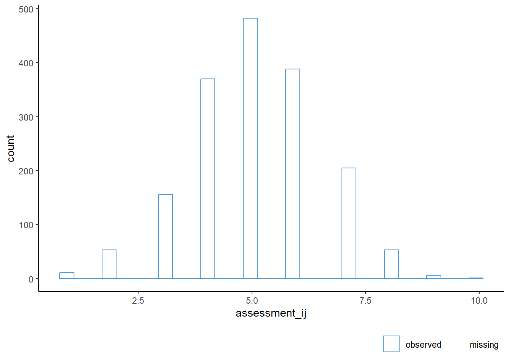
We will use 2l.pmm for this variable too.
meth["assessment_ij"] <- "2l.pmm"The cluster-level variable ‘teacher experience’ is continuous.
ggmice(dat, aes(experience_j)) +
geom_histogram(fill = "white")`stat_bin()` using `bins = 30`. Pick better value with `binwidth`.Warning: Removed 1 row containing non-finite outside the scale range
(`stat_bin()`).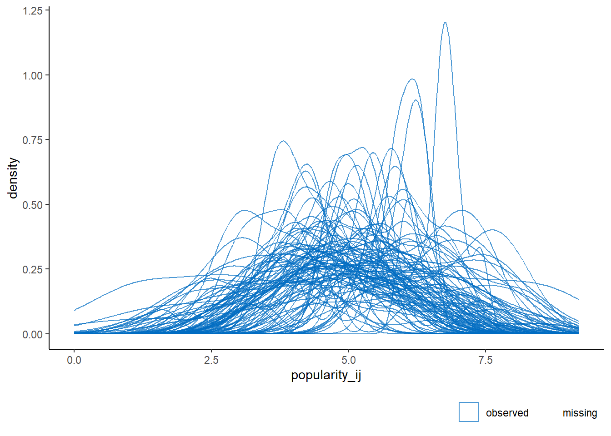
We can use 2lonly.mean to impute the missing values if we are sufficiently certain that this variable… Otherwise, 2lonly.pmm is a good alternative.
meth["experience_j"] <- "2lonly.pmm"Re-evaluate the methods vector
meth unit_id cluster_id popularity_ij gender_ij extraversion_ij
"" "" "2l.norm" "2l.bin" "2l.pmm"
experience_j assessment_ij
"2lonly.pmm" "2l.pmm" All incomplete variables have a multilevel imputation method.
Imputation model predictors
Imputation model predictors are specified with the predictorMatrix argument in mice. The default predictor matrix is not appropriate for multilevel imputation models.
pred <- make.predictorMatrix(dat)The cluster identifier cluster_id will serve as clustering variable for all imputation models, whereas the unit identifier will not be part of any imputation model.
pred[, "cluster_id"] <- -2
pred[, "unit_id"] <- 0Popularity
For the outcome variable ‘popularity’, we will include all unit-level variables that appear in the most general analytic model to be applied to imputed data. We will include a fixed effect for ‘gender` and a random effect for ’extraversion’.
pred["popularity_ij", "gender_ij"] <- 1
pred["popularity_ij", "extraversion_ij"] <- 2The next step is to include the disaggregated cluster means of all level-1 variables, which means we have to edit the predictor matrix.
pred["popularity_ij", "gender_ij"] <- 3
pred["popularity_ij", "extraversion_ij"] <- 4There are no unit-level interactions in the analytic model, so we will continue to the next step: include all level-2 predictors.
pred["popularity_ij", "experience_j"] <- 1There are no cluster-level interactions required either, but there is a cross-level interaction implied by the analytic model. We will use passive imputation to impute the interaction effect for extraversion and experience. This is done by adding an empty column to the data for the interaction term and letting mice calculate the interaction effect on the fly.
dat$extraversion_experience <- NAWe need to edit the methods vector to accommodate this additional variable. Set the imputation method for the interaction term to passive imputation.
meth["extraversion_experience"] <- "~ I(extraversion_ij * experience_j)"Add the additional variable to the predictor matrix as well.
pred <- rbind(pred, extraversion_experience = 0)
pred <- cbind(pred, extraversion_experience = 0)Further edit the predictor matrix so the interaction term is included in the imputation model for ‘popularity’.
pred["popularity_ij", "extraversion_experience"] <- 1And finally, include a predictor related to the missingness and the target: the auxiliary variable teacher assessment.
pred["popularity_ij", "assessment_ij"] <- 1The imputation model predictors for popularity now are as follows.
pred["popularity_ij", ] unit_id cluster_id popularity_ij
0 -2 0
gender_ij extraversion_ij experience_j
3 4 1
assessment_ij extraversion_experience
1 1 Gender
The analytic model implies a relation between gender and popularity. So we need to include the outcome variable in the imputation model.
pred["gender_ij", "popularity_ij"] <- 1Extraversion
The analytic model implies a relation between gender and popularity. So we need to include the outcome variable in the imputation model.
pred["extraversion_ij", "popularity_ij"] <- 1Experience
The analytic model implies a relation between the cluster-level variable teacher experience and the unit-level variable popularity.
pred["experience_j", "popularity_ij"] <- 1Teacher assessment
The analytic model does not imply any relation with teacher assessment. This variable is only used as auxiliary variable.
pred["assessment_ij", "popularity_ij"] <- 1Finally, clean up the predictor matrix by setting the diagonal to 0, to exclude any terms involving the target.
diag(pred) <- 0Our final predictor matrix can be visualized as follows.
plot_pred(pred, meth = meth)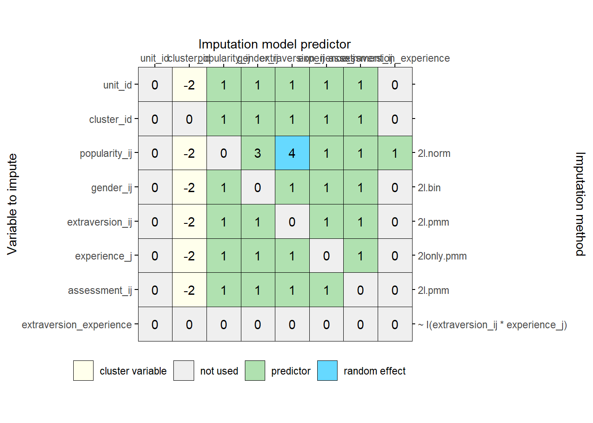
Impute the data
imp <- mice(
dat,
m = 1,
method = meth,
predictorMatrix = pred,
maxit = 1)Does not run. Set imputation method for experience to 2lonly.mean and re-run.
meth["experience_j"] <- "2lonly.mean"
imp <- mice(
dat,
method = meth,
predictorMatrix = pred,
maxit = 1,
printFlag = FALSE)Warning in mice.impute.2l.bin(y = c(2, 1, 2, 2, 2, 1, 1, 1, 1, 1, 2, 2, : glmer
does not run. Simplify imputation modelWarning in mice.impute.2l.bin(y = c(2, 1, 2, 2, 2, 1, 1, 1, 1, 1, 2, 2, : glmer
does not run. Simplify imputation modelWarning in mice.impute.2l.bin(y = c(2, 1, 2, 2, 2, 1, 1, 1, 1, 1, 2, 2, : glmer
does not run. Simplify imputation modelWarning in mice.impute.2l.bin(y = c(2, 1, 2, 2, 2, 1, 1, 1, 1, 1, 2, 2, : glmer
does not run. Simplify imputation modelWarning in mice.impute.2l.bin(y = c(2, 1, 2, 2, 2, 1, 1, 1, 1, 1, 2, 2, : glmer
does not run. Simplify imputation modelThis solves the issue in imputing teacher experience. Now edit the method for gender.
meth["gender_ij"] <- "2l.pmm"
imp <- mice(
dat,
method = meth,
predictorMatrix = pred,
maxit = 1,
printFlag = FALSE)This code runs! Add iterations and evaluate convergence.
imp <- mice.mids(imp, maxit = 9, printFlag = FALSE)
plot_trace(imp)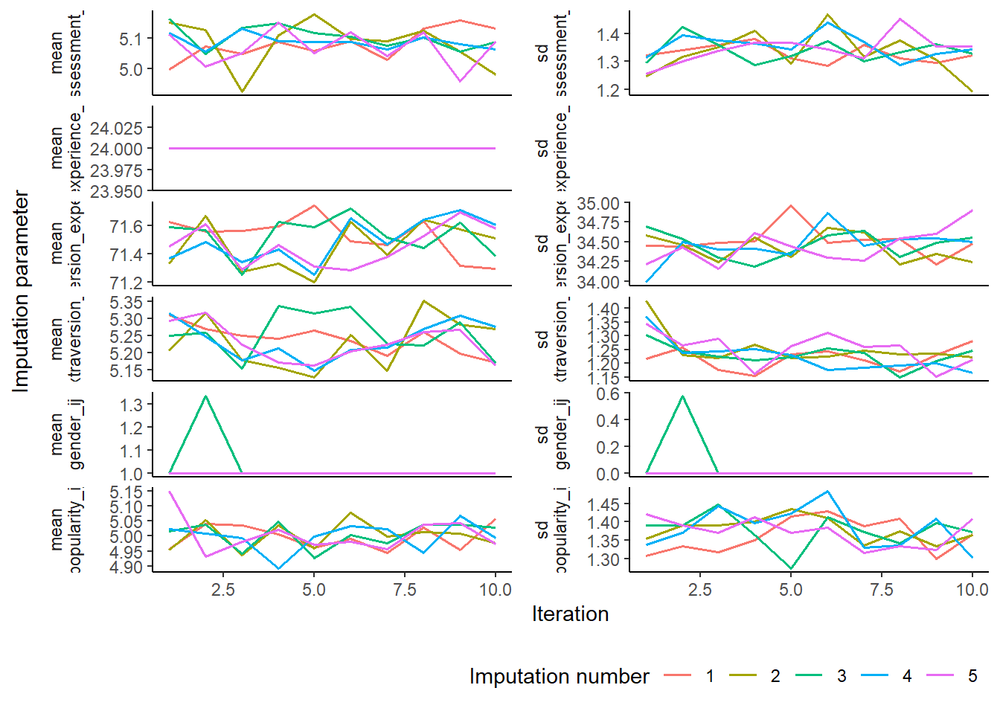
The trace plots for teacher experience and gender do not exhibit the typical characteristics of convergence: the lines do not intermingle nicely, and thus require further inspection. The traceplot of the interaction term also requires further inspection, as there appears to be some non-stationarity in the standard deviation of the imputations. We will append some extra iterations to evaluate the potential upward trend.
imp <- mice.mids(imp, maxit = 10, printFlag = FALSE)
plot_trace(imp)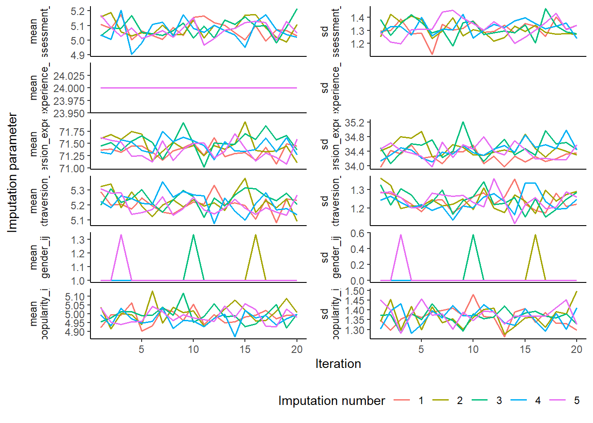
After 20 iterations, there is no apparent trending visible in the trace plots. We will first evaluate the imputations of the variables with atypical trace plots.
ggmice(imp, aes(.imp, experience_j)) +
geom_jitter(height = 0)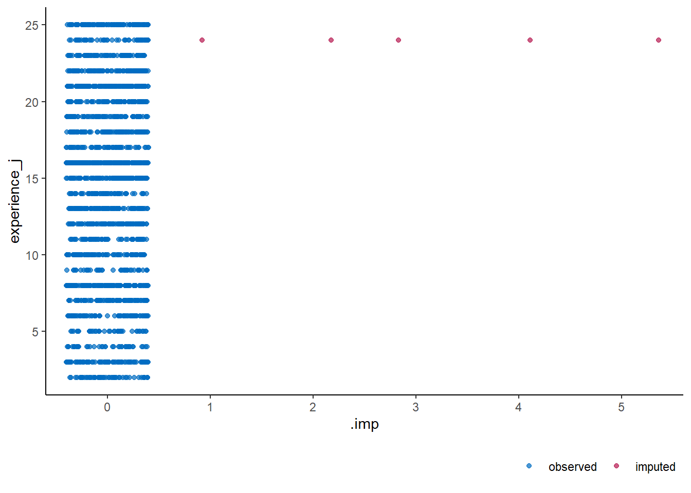
This graphs shows that there is only one imputed value and no variability between the imputations, which explains the atypical trace plots for this variable.
ggmice(imp, aes(.imp, gender_ij)) +
geom_jitter(height = 0)
Equivalently, for gender, there is no variability in the imputed values. This leaves no more apparent issues with convergence. We can now evaluate the imputations of the other variables.
Popularity
ggmice(imp, aes(.imp, popularity_ij)) +
geom_jitter(height = 0)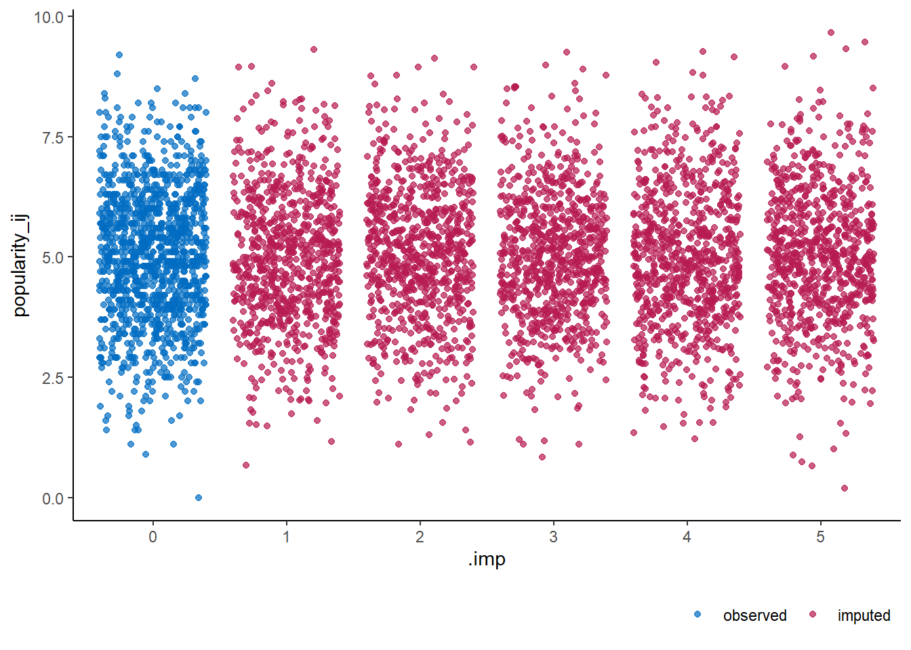
There is one imputed value clearly outside of the range of observed values.
range(mice::complete(imp)$popularity_ij)[1] 0.0 9.2If a negative value for popularity is impossible, one might decide to re-impute the data using a different imputation method. For our analyses, a negative value falls outside the range of observations, but does not require re-imputation.
ggmice(imp, aes(popularity_ij, group = .imp)) +
geom_density()
Extraversion
ggmice(imp, aes(.imp, extraversion_ij)) +
geom_jitter(height = 0)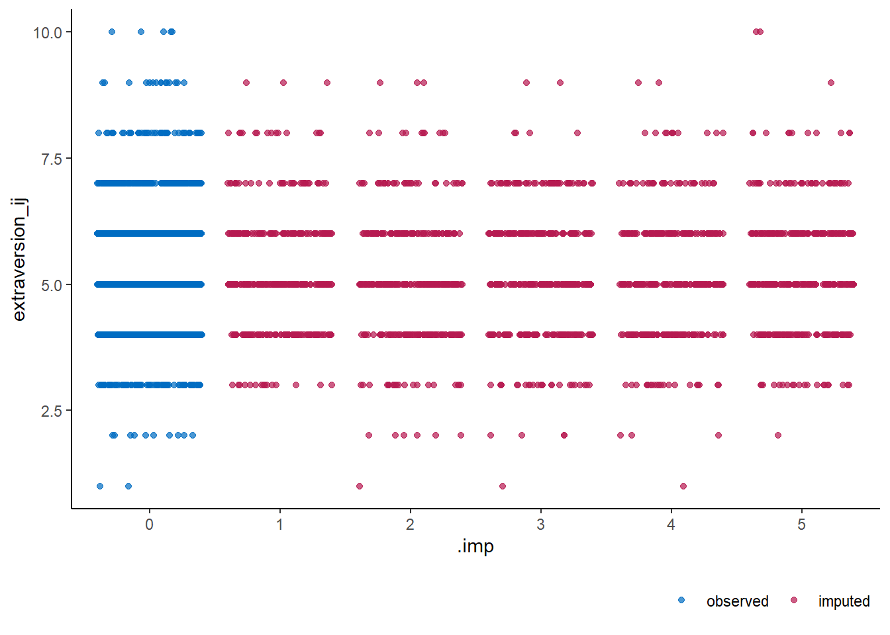
ggmice(imp, aes(extraversion_ij, group = .imp)) +
geom_density()
Teacher assessment
ggmice(imp, aes(.imp, assessment_ij)) +
geom_jitter(height = 0)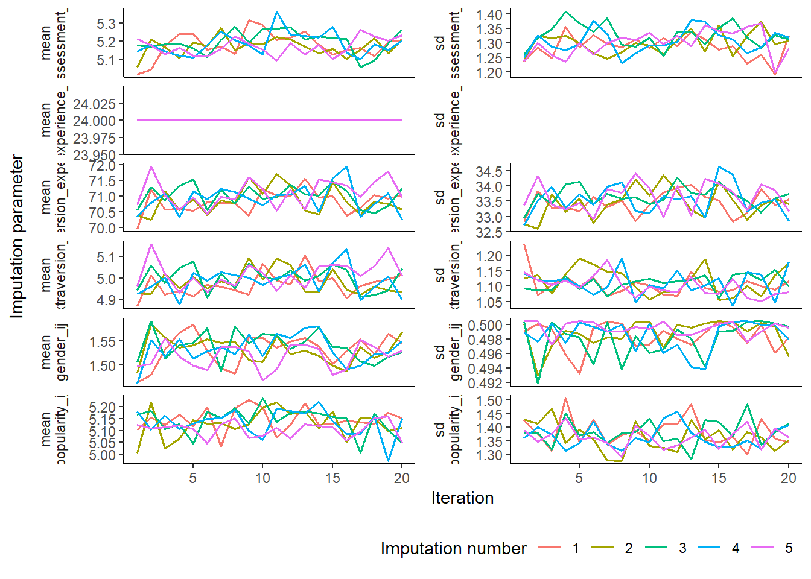
ggmice(imp, aes(assessment_ij, group = .imp)) +
geom_density()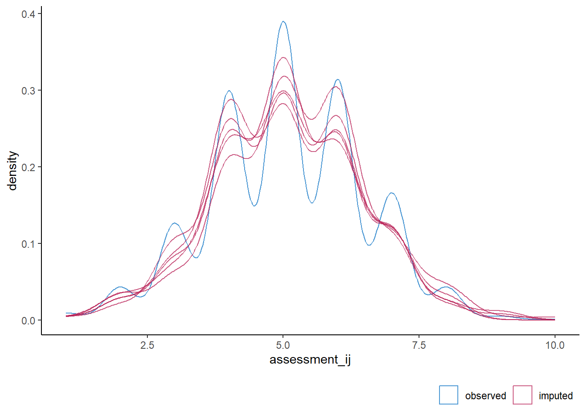
Interaction term
ggmice(imp, aes(.imp, extraversion_experience)) +
geom_jitter(height = 0)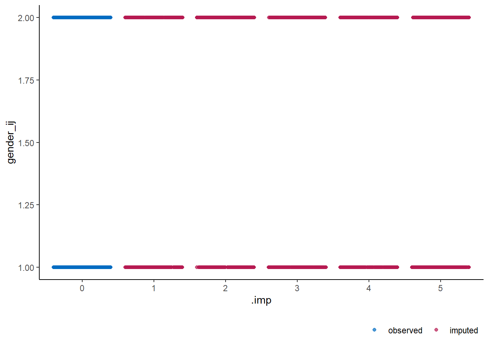
ggmice(imp, aes(extraversion_experience, group = .imp)) +
geom_density()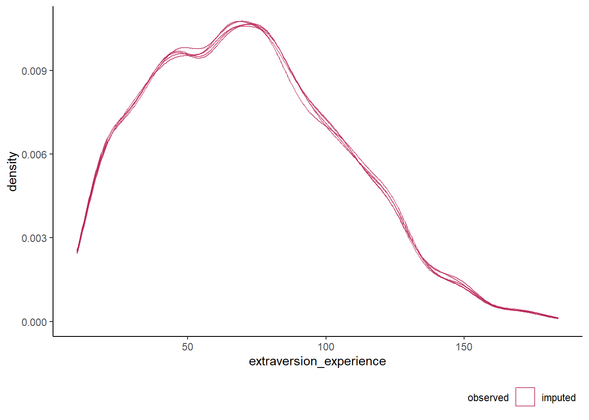
Visualize
ggmice(imp, aes(y = popularity_ij, x = extraversion_ij, group = cluster_id)) +
geom_point(alpha = 0.1) +
geom_smooth(color = "grey", method = "lm", se = FALSE, alpha = 0.1) +
geom_smooth(aes(group = NULL), color = "black", method = "lm", se = FALSE, alpha = 0.1)`geom_smooth()` using formula = 'y ~ x'
`geom_smooth()` using formula = 'y ~ x'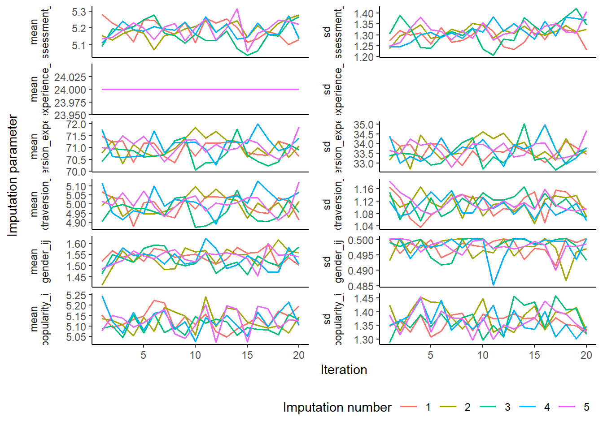
Analysis
After successful imputation, we can analyze the imputed data and pool the results for further analysis.
Single-level model
cca <- lm(
popularity_ij ~ 1,
data = dat
)
tidy(cca)# A tibble: 1 × 5
term estimate std.error statistic p.value
<chr> <dbl> <dbl> <dbl> <dbl>
1 (Intercept) 5.03 0.0396 127. 0fit <- with(
imp,
lm(popularity_ij ~ 1, data = dat)
) |>
pool()
tidy(fit) term estimate std.error statistic p.value b df dfcom
1 (Intercept) 5.033555 0.03963228 127.0065 0 0 1197.882 1200
fmi lambda m riv ubar
1 0.001665443 0 5 0 0.001570717Intercept-only model
cca <- lmer(
popularity_ij ~ (1 | cluster_id),
data = dat,
REML = FALSE
)
tidy(cca)# A tibble: 3 × 6
effect group term estimate std.error statistic
<chr> <chr> <chr> <dbl> <dbl> <dbl>
1 fixed <NA> (Intercept) 5.02 0.0891 56.4
2 ran_pars cluster_id sd__(Intercept) 0.831 NA NA
3 ran_pars Residual sd__Observation 1.09 NA NA fit <- with(
imp,
lmer(
popularity_ij ~ (1 | cluster_id),
data = dat,
REML = FALSE)
)
pool(fit) |> tidy() term estimate std.error statistic p.value b df dfcom fmi
1 (Intercept) 5.021201 0.0890947 56.35802 0 0 1195.882 1198 0.001668221
lambda m riv ubar
1 0 5 0 0.007937865mitml::testEstimates(as.mitml.result(fit), extra.pars = TRUE)
Call:
mitml::testEstimates(model = as.mitml.result(fit), extra.pars = TRUE)
Final parameter estimates and inferences obtained from 5 imputed data sets.
Estimate Std.Error t.value df P(>|t|) RIV FMI
(Intercept) 5.021 0.089 56.358 Inf 0.000 0.000 0.000
Estimate
Intercept~~Intercept|cluster_id 0.690
Residual~~Residual 1.193
ICC|cluster_id 0.367
Unadjusted hypothesis test as appropriate in larger samples.Model with explanatory variables
cca <- lmer(
popularity_ij ~ gender_ij + extraversion_ij + experience_j + (1 | cluster_id),
data = dat,
REML = FALSE
)
tidy(cca)# A tibble: 6 × 6
effect group term estimate std.error statistic
<chr> <chr> <chr> <dbl> <dbl> <dbl>
1 fixed <NA> (Intercept) -0.455 0.199 -2.28
2 fixed <NA> gender_ij 1.29 0.0481 26.7
3 fixed <NA> extraversion_ij 0.447 0.0215 20.7
4 fixed <NA> experience_j 0.0877 0.00874 10.0
5 ran_pars cluster_id sd__(Intercept) 0.518 NA NA
6 ran_pars Residual sd__Observation 0.764 NA NA fit <- with(
imp,
lmer(
popularity_ij ~ gender_ij + extraversion_ij + experience_j + (1 | cluster_id),
data = dat,
REML = FALSE)
)
pool(fit) |> tidy() term estimate std.error statistic p.value b df
1 (Intercept) -0.45459695 0.199053149 -2.283797 2.255904e-02 0 1189.882
2 gender_ij 1.28611143 0.048112155 26.731528 1.120524e-123 0 1189.882
3 extraversion_ij 0.44652838 0.021546495 20.723945 1.056952e-81 0 1189.882
4 experience_j 0.08767041 0.008744419 10.025871 9.120374e-23 0 1189.882
dfcom fmi lambda m riv ubar
1 1192 0.001676611 0 5 0 3.962216e-02
2 1192 0.001676611 0 5 0 2.314779e-03
3 1192 0.001676611 0 5 0 4.642515e-04
4 1192 0.001676611 0 5 0 7.646486e-05mitml::testEstimates(as.mitml.result(fit), extra.pars = TRUE)
Call:
mitml::testEstimates(model = as.mitml.result(fit), extra.pars = TRUE)
Final parameter estimates and inferences obtained from 5 imputed data sets.
Estimate Std.Error t.value df P(>|t|) RIV FMI
(Intercept) -0.455 0.199 -2.284 Inf 0.022 0.000 0.000
gender_ij 1.286 0.048 26.732 Inf 0.000 0.000 0.000
extraversion_ij 0.447 0.022 20.724 Inf 0.000 0.000 0.000
experience_j 0.088 0.009 10.026 Inf 0.000 0.000 0.000
Estimate
Intercept~~Intercept|cluster_id 0.269
Residual~~Residual 0.583
ICC|cluster_id 0.316
Unadjusted hypothesis test as appropriate in larger samples.Model with explanatory variables, extraversion slope random
cca <- lmer(
popularity_ij ~ gender_ij + extraversion_ij + experience_j +
(1 + extraversion_ij | cluster_id),
data = dat,
REML = FALSE
)
tidy(cca)# A tibble: 8 × 6
effect group term estimate std.error statistic
<chr> <chr> <chr> <dbl> <dbl> <dbl>
1 fixed <NA> (Intercept) -0.438 0.222 -1.97
2 fixed <NA> gender_ij 1.28 0.0476 26.9
3 fixed <NA> extraversion_ij 0.440 0.0284 15.5
4 fixed <NA> experience_j 0.0871 0.00863 10.1
5 ran_pars cluster_id sd__(Intercept) 1.13 NA NA
6 ran_pars cluster_id cor__(Intercept).extraversio… -0.897 NA NA
7 ran_pars cluster_id sd__extraversion_ij 0.180 NA NA
8 ran_pars Residual sd__Observation 0.740 NA NA fit <- with(
imp,
lmer(
popularity_ij ~ gender_ij + extraversion_ij + experience_j +
(1 + extraversion_ij | cluster_id),
data = dat,
REML = FALSE)
)
pool(fit) |> tidy() term estimate std.error statistic p.value b df
1 (Intercept) -0.43804176 0.222237366 -1.971054 4.894959e-02 0 1187.883
2 gender_ij 1.28026787 0.047605007 26.893555 8.201898e-125 0 1187.883
3 extraversion_ij 0.43968176 0.028356053 15.505746 1.603530e-49 0 1187.883
4 experience_j 0.08706721 0.008630314 10.088533 5.090619e-23 0 1187.883
dfcom fmi lambda m riv ubar
1 1190 0.001679427 0 5 0 4.938945e-02
2 1190 0.001679427 0 5 0 2.266237e-03
3 1190 0.001679427 0 5 0 8.040658e-04
4 1190 0.001679427 0 5 0 7.448233e-05mitml::testEstimates(as.mitml.result(fit), extra.pars = TRUE)
Call:
mitml::testEstimates(model = as.mitml.result(fit), extra.pars = TRUE)
Final parameter estimates and inferences obtained from 5 imputed data sets.
Estimate Std.Error t.value df P(>|t|) RIV FMI
(Intercept) -0.438 0.222 -1.971 Inf 0.049 0.000 0.000
gender_ij 1.280 0.048 26.894 Inf 0.000 0.000 0.000
extraversion_ij 0.440 0.028 15.506 Inf 0.000 0.000 0.000
experience_j 0.087 0.009 10.089 Inf 0.000 0.000 0.000
Estimate
Intercept~~Intercept|cluster_id 1.283
extraversion_ij~~extraversion_ij|cluster_id 0.032
Intercept~~extraversion_ij|cluster_id -0.183
Residual~~Residual 0.548
ICC|cluster_id 0.701
Unadjusted hypothesis test as appropriate in larger samples.Model with with cross-level interaction
cca <- lmer(
popularity_ij ~ gender_ij + extraversion_ij + experience_j +
extraversion_ij:experience_j + (1 + extraversion_ij | cluster_id),
data = dat,
REML = FALSE
)Warning in checkConv(attr(opt, "derivs"), opt$par, ctrl = control$checkConv, :
Model failed to converge with max|grad| = 0.00495196 (tol = 0.002, component 1)tidy(cca)# A tibble: 9 × 6
effect group term estimate std.error statistic
<chr> <chr> <chr> <dbl> <dbl> <dbl>
1 fixed <NA> (Intercept) -2.33 0.312 -7.49
2 fixed <NA> gender_ij 1.26 0.0468 27.0
3 fixed <NA> extraversion_ij 0.779 0.0462 16.8
4 fixed <NA> experience_j 0.219 0.0190 11.6
5 fixed <NA> extraversion_ij:experience_j -0.0239 0.00296 -8.07
6 ran_pars cluster_id sd__(Intercept) 0.600 NA NA
7 ran_pars cluster_id cor__(Intercept).extraversio… -0.701 NA NA
8 ran_pars cluster_id sd__extraversion_ij 0.0258 NA NA
9 ran_pars Residual sd__Observation 0.741 NA NA fit <- with(
imp,
lmer(
popularity_ij ~ gender_ij + extraversion_ij + experience_j +
extraversion_ij:experience_j + (1 + extraversion_ij | cluster_id),
data = dat,
REML = FALSE)
) Warning in checkConv(attr(opt, "derivs"), opt$par, ctrl = control$checkConv, :
Model failed to converge with max|grad| = 0.00495196 (tol = 0.002, component 1)
Warning in checkConv(attr(opt, "derivs"), opt$par, ctrl = control$checkConv, :
Model failed to converge with max|grad| = 0.00495196 (tol = 0.002, component 1)
Warning in checkConv(attr(opt, "derivs"), opt$par, ctrl = control$checkConv, :
Model failed to converge with max|grad| = 0.00495196 (tol = 0.002, component 1)
Warning in checkConv(attr(opt, "derivs"), opt$par, ctrl = control$checkConv, :
Model failed to converge with max|grad| = 0.00495196 (tol = 0.002, component 1)
Warning in checkConv(attr(opt, "derivs"), opt$par, ctrl = control$checkConv, :
Model failed to converge with max|grad| = 0.00495196 (tol = 0.002, component 1)pool(fit) |> tidy() term estimate std.error statistic p.value
1 (Intercept) -2.33429638 0.311701929 -7.488874 1.351136e-13
2 gender_ij 1.26491027 0.046825663 27.013184 1.162079e-125
3 extraversion_ij 0.77879482 0.046234259 16.844540 2.986533e-57
4 experience_j 0.21927052 0.018952063 11.569744 2.074365e-29
5 extraversion_ij:experience_j -0.02386015 0.002955871 -8.072122 1.681341e-15
b df dfcom fmi lambda m riv ubar
1 0 1186.883 1189 0.001680838 0 5 0 9.715809e-02
2 0 1186.883 1189 0.001680838 0 5 0 2.192643e-03
3 0 1186.883 1189 0.001680838 0 5 0 2.137607e-03
4 0 1186.883 1189 0.001680838 0 5 0 3.591807e-04
5 0 1186.883 1189 0.001680838 0 5 0 8.737174e-06mitml::testEstimates(as.mitml.result(fit), extra.pars = TRUE)
Call:
mitml::testEstimates(model = as.mitml.result(fit), extra.pars = TRUE)
Final parameter estimates and inferences obtained from 5 imputed data sets.
Estimate Std.Error t.value df P(>|t|) RIV FMI
(Intercept) -2.334 0.312 -7.489 Inf 0.000 0.000 0.000
gender_ij 1.265 0.047 27.013 Inf 0.000 0.000 0.000
extraversion_ij 0.779 0.046 16.845 Inf 0.000 0.000 0.000
experience_j 0.219 0.019 11.570 Inf 0.000 0.000 0.000
extraversion_ij:experience_j -0.024 0.003 -8.072 Inf 0.000 0.000 0.000
Estimate
Intercept~~Intercept|cluster_id 0.360
extraversion_ij~~extraversion_ij|cluster_id 0.001
Intercept~~extraversion_ij|cluster_id -0.011
Residual~~Residual 0.550
ICC|cluster_id 0.396
Unadjusted hypothesis test as appropriate in larger samples.